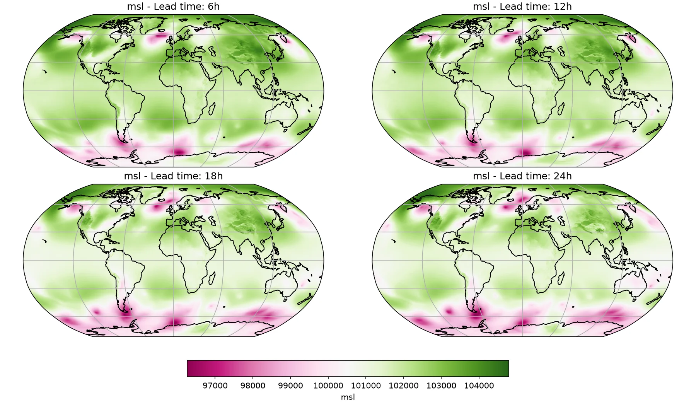

Creating a Local Data Source¶
Create and save an offline dataset to use in an inference pipeline.
This example demonstrates how to:
- Build a small offline dataset by fetching data and writing to a Zarr store
- Load the local store as a data source for an inference pipeline with the Microsoft Aurora model
- Run the deterministic workflow and plot results
Set Up¶
For this example, the following are needed:
- Prognostic Model: Use the built-in Aurora 6-hour model
earth2studio.models.px.Aurora. - Data source: Pull data from the WeatherBench2 data API
earth2studio.data.WB2ERA5.
import os
os.makedirs("outputs", exist_ok=True)
from dotenv import load_dotenv
load_dotenv()
from earth2studio.data import WB2ERA5, fetch_data
from earth2studio.models.px import Aurora
# Load the default model package which downloads the checkpoint from GCP
package = Aurora.load_default_package()
model = Aurora.load_model(package)
# Create the data source, cache is false
wb2 = WB2ERA5(cache=False, verbose=False)
Console output477 lines
/__w/earth2studio/earth2studio/.venv/lib/python3.13/site-packages/torch/cuda/__init__.py:64: FutureWarning: The pynvml package is deprecated. Please install nvidia-ml-py instead. If you did not install pynvml directly, please report this to the maintainers of the package that installed pynvml for you.
import pynvml # type: ignore[import]
WARNING[XFORMERS]: xFormers can't load C++/CUDA extensions. xFormers was built for:
PyTorch 2.10.0+cu128 with CUDA 1208 (you have 2.13.0+cu130)
Python 3.10.19 (you have 3.13.13)
Please reinstall xformers (see https://github.com/facebookresearch/xformers#installing-xformers)
Memory-efficient attention, SwiGLU, sparse and more won't be available.
Set XFORMERS_MORE_DETAILS=1 for more details
CuPy distance computation test failed with error: cuVS >= 24.12 or pylibraft < 24.12 should be installed to use this feature
Downloading aurora-0.25-static-z.npy: 0%| | 0.00/3.96M [00:00<?, ?B/s]
Downloading aurora-0.25-static-z.npy: 100%|██████████| 3.96M/3.96M [00:00<00:00, 6.23MB/s]
Downloading aurora-0.25-static-z.npy: 100%|██████████| 3.96M/3.96M [00:00<00:00, 6.19MB/s]
Downloading aurora-0.25-static-slt.npy: 0%| | 0.00/3.96M [00:00<?, ?B/s]
Downloading aurora-0.25-static-slt.npy: 100%|██████████| 3.96M/3.96M [00:00<00:00, 9.09MB/s]
Downloading aurora-0.25-static-slt.npy: 100%|██████████| 3.96M/3.96M [00:00<00:00, 9.01MB/s]
Downloading aurora-0.25-static-lsm.npy: 0%| | 0.00/3.96M [00:00<?, ?B/s]
Downloading aurora-0.25-static-lsm.npy: 100%|██████████| 3.96M/3.96M [00:00<00:00, 7.68MB/s]
Downloading aurora-0.25-static-lsm.npy: 100%|██████████| 3.96M/3.96M [00:00<00:00, 7.58MB/s]
Downloading aurora-0.25-pretrained.ckpt: 0%| | 0.00/4.68G [00:00<?, ?B/s]
Downloading aurora-0.25-pretrained.ckpt: 0%| | 10.0M/4.68G [00:01<10:15, 8.14MB/s]
Downloading aurora-0.25-pretrained.ckpt: 0%| | 20.0M/4.68G [00:01<05:18, 15.7MB/s]
Downloading aurora-0.25-pretrained.ckpt: 1%| | 30.0M/4.68G [00:01<03:49, 21.8MB/s]
Downloading aurora-0.25-pretrained.ckpt: 1%| | 40.0M/4.68G [00:01<02:57, 28.2MB/s]
Downloading aurora-0.25-pretrained.ckpt: 1%| | 50.0M/4.68G [00:02<02:36, 31.7MB/s]
Downloading aurora-0.25-pretrained.ckpt: 1%|▏ | 60.0M/4.68G [00:02<02:15, 36.5MB/s]
Downloading aurora-0.25-pretrained.ckpt: 1%|▏ | 70.0M/4.68G [00:02<02:27, 33.6MB/s]
Downloading aurora-0.25-pretrained.ckpt: 2%|▏ | 80.0M/4.68G [00:03<02:24, 34.1MB/s]
Downloading aurora-0.25-pretrained.ckpt: 2%|▏ | 90.0M/4.68G [00:03<02:21, 34.8MB/s]
Downloading aurora-0.25-pretrained.ckpt: 2%|▏ | 100M/4.68G [00:03<02:11, 37.4MB/s]
Downloading aurora-0.25-pretrained.ckpt: 2%|▏ | 110M/4.68G [00:03<02:07, 38.6MB/s]
Downloading aurora-0.25-pretrained.ckpt: 3%|▎ | 120M/4.68G [00:04<02:02, 40.0MB/s]
Downloading aurora-0.25-pretrained.ckpt: 3%|▎ | 130M/4.68G [00:04<02:16, 35.9MB/s]
Downloading aurora-0.25-pretrained.ckpt: 3%|▎ | 140M/4.68G [00:04<02:01, 40.1MB/s]
Downloading aurora-0.25-pretrained.ckpt: 3%|▎ | 150M/4.68G [00:04<01:51, 43.5MB/s]
Downloading aurora-0.25-pretrained.ckpt: 3%|▎ | 160M/4.68G [00:05<01:46, 45.7MB/s]
Downloading aurora-0.25-pretrained.ckpt: 4%|▎ | 170M/4.68G [00:05<01:44, 46.4MB/s]
Downloading aurora-0.25-pretrained.ckpt: 4%|▍ | 180M/4.68G [00:05<01:29, 53.9MB/s]
Downloading aurora-0.25-pretrained.ckpt: 4%|▍ | 190M/4.68G [00:05<01:25, 56.2MB/s]
Downloading aurora-0.25-pretrained.ckpt: 4%|▍ | 200M/4.68G [00:05<01:45, 45.8MB/s]
Downloading aurora-0.25-pretrained.ckpt: 4%|▍ | 210M/4.68G [00:06<01:39, 48.3MB/s]
Downloading aurora-0.25-pretrained.ckpt: 5%|▍ | 220M/4.68G [00:06<01:34, 50.7MB/s]
Downloading aurora-0.25-pretrained.ckpt: 5%|▍ | 230M/4.68G [00:06<01:32, 51.5MB/s]
Downloading aurora-0.25-pretrained.ckpt: 5%|▌ | 240M/4.68G [00:06<01:29, 53.4MB/s]
Downloading aurora-0.25-pretrained.ckpt: 5%|▌ | 250M/4.68G [00:07<01:58, 40.2MB/s]
Downloading aurora-0.25-pretrained.ckpt: 5%|▌ | 260M/4.68G [00:07<01:56, 40.7MB/s]
Downloading aurora-0.25-pretrained.ckpt: 6%|▌ | 270M/4.68G [00:07<01:45, 45.1MB/s]
Downloading aurora-0.25-pretrained.ckpt: 6%|▌ | 280M/4.68G [00:07<01:49, 43.2MB/s]
Downloading aurora-0.25-pretrained.ckpt: 6%|▌ | 290M/4.68G [00:07<01:47, 43.9MB/s]
Downloading aurora-0.25-pretrained.ckpt: 6%|▋ | 300M/4.68G [00:08<02:02, 38.4MB/s]
Downloading aurora-0.25-pretrained.ckpt: 6%|▋ | 310M/4.68G [00:08<01:54, 41.2MB/s]
Downloading aurora-0.25-pretrained.ckpt: 7%|▋ | 320M/4.68G [00:08<02:06, 37.0MB/s]
Downloading aurora-0.25-pretrained.ckpt: 7%|▋ | 330M/4.68G [00:09<02:00, 38.8MB/s]
Downloading aurora-0.25-pretrained.ckpt: 7%|▋ | 340M/4.68G [00:09<01:58, 39.4MB/s]
Downloading aurora-0.25-pretrained.ckpt: 7%|▋ | 350M/4.68G [00:09<02:02, 38.1MB/s]
Downloading aurora-0.25-pretrained.ckpt: 8%|▊ | 360M/4.68G [00:09<01:55, 40.1MB/s]
Downloading aurora-0.25-pretrained.ckpt: 8%|▊ | 370M/4.68G [00:10<01:54, 40.6MB/s]
Downloading aurora-0.25-pretrained.ckpt: 8%|▊ | 380M/4.68G [00:10<01:51, 41.5MB/s]
Downloading aurora-0.25-pretrained.ckpt: 8%|▊ | 390M/4.68G [00:10<02:15, 34.1MB/s]
Downloading aurora-0.25-pretrained.ckpt: 8%|▊ | 400M/4.68G [00:11<02:12, 34.8MB/s]
Downloading aurora-0.25-pretrained.ckpt: 9%|▊ | 410M/4.68G [00:11<02:08, 35.9MB/s]
Downloading aurora-0.25-pretrained.ckpt: 9%|▉ | 420M/4.68G [00:11<02:19, 32.8MB/s]
Downloading aurora-0.25-pretrained.ckpt: 9%|▉ | 430M/4.68G [00:12<02:20, 32.5MB/s]
Downloading aurora-0.25-pretrained.ckpt: 9%|▉ | 440M/4.68G [00:12<02:52, 26.4MB/s]
Downloading aurora-0.25-pretrained.ckpt: 9%|▉ | 450M/4.68G [00:12<02:39, 28.6MB/s]
Downloading aurora-0.25-pretrained.ckpt: 10%|▉ | 460M/4.68G [00:13<02:25, 31.2MB/s]
Downloading aurora-0.25-pretrained.ckpt: 10%|▉ | 470M/4.68G [00:13<02:13, 34.1MB/s]
Downloading aurora-0.25-pretrained.ckpt: 10%|█ | 480M/4.68G [00:13<02:19, 32.4MB/s]
Downloading aurora-0.25-pretrained.ckpt: 10%|█ | 490M/4.68G [00:14<02:36, 28.8MB/s]
Downloading aurora-0.25-pretrained.ckpt: 10%|█ | 500M/4.68G [00:14<02:29, 30.2MB/s]
Downloading aurora-0.25-pretrained.ckpt: 11%|█ | 510M/4.68G [00:14<02:28, 30.3MB/s]
Downloading aurora-0.25-pretrained.ckpt: 11%|█ | 520M/4.68G [00:15<02:20, 31.8MB/s]
Downloading aurora-0.25-pretrained.ckpt: 11%|█ | 530M/4.68G [00:15<02:18, 32.2MB/s]
Downloading aurora-0.25-pretrained.ckpt: 11%|█▏ | 540M/4.68G [00:15<02:03, 36.1MB/s]
Downloading aurora-0.25-pretrained.ckpt: 11%|█▏ | 550M/4.68G [00:16<02:05, 35.6MB/s]
Downloading aurora-0.25-pretrained.ckpt: 12%|█▏ | 560M/4.68G [00:16<01:52, 39.6MB/s]
Downloading aurora-0.25-pretrained.ckpt: 12%|█▏ | 570M/4.68G [00:16<02:03, 35.9MB/s]
Downloading aurora-0.25-pretrained.ckpt: 12%|█▏ | 580M/4.68G [00:16<02:10, 33.8MB/s]
Downloading aurora-0.25-pretrained.ckpt: 12%|█▏ | 590M/4.68G [00:17<01:51, 39.4MB/s]
Downloading aurora-0.25-pretrained.ckpt: 13%|█▎ | 600M/4.68G [00:17<01:52, 39.0MB/s]
Downloading aurora-0.25-pretrained.ckpt: 13%|█▎ | 610M/4.68G [00:17<01:51, 39.3MB/s]
Downloading aurora-0.25-pretrained.ckpt: 13%|█▎ | 620M/4.68G [00:17<01:37, 44.8MB/s]
Downloading aurora-0.25-pretrained.ckpt: 13%|█▎ | 630M/4.68G [00:18<01:29, 48.7MB/s]
Downloading aurora-0.25-pretrained.ckpt: 13%|█▎ | 640M/4.68G [00:18<01:42, 42.4MB/s]
Downloading aurora-0.25-pretrained.ckpt: 14%|█▎ | 650M/4.68G [00:18<01:29, 48.3MB/s]
Downloading aurora-0.25-pretrained.ckpt: 14%|█▍ | 660M/4.68G [00:18<01:22, 52.8MB/s]
Downloading aurora-0.25-pretrained.ckpt: 14%|█▍ | 670M/4.68G [00:18<01:21, 52.9MB/s]
Downloading aurora-0.25-pretrained.ckpt: 14%|█▍ | 680M/4.68G [00:19<01:29, 47.9MB/s]
Downloading aurora-0.25-pretrained.ckpt: 14%|█▍ | 690M/4.68G [00:19<01:34, 45.6MB/s]
Downloading aurora-0.25-pretrained.ckpt: 15%|█▍ | 700M/4.68G [00:19<01:34, 45.3MB/s]
Downloading aurora-0.25-pretrained.ckpt: 15%|█▍ | 710M/4.68G [00:20<02:03, 34.7MB/s]
Downloading aurora-0.25-pretrained.ckpt: 15%|█▌ | 720M/4.68G [00:20<01:45, 40.4MB/s]
Downloading aurora-0.25-pretrained.ckpt: 15%|█▌ | 730M/4.68G [00:20<01:43, 41.1MB/s]
Downloading aurora-0.25-pretrained.ckpt: 15%|█▌ | 740M/4.68G [00:20<01:52, 37.9MB/s]
Downloading aurora-0.25-pretrained.ckpt: 16%|█▌ | 750M/4.68G [00:21<01:43, 40.9MB/s]
Downloading aurora-0.25-pretrained.ckpt: 16%|█▌ | 760M/4.68G [00:21<01:44, 40.5MB/s]
Downloading aurora-0.25-pretrained.ckpt: 16%|█▌ | 770M/4.68G [00:21<02:04, 33.8MB/s]
Downloading aurora-0.25-pretrained.ckpt: 16%|█▋ | 780M/4.68G [00:21<01:58, 35.5MB/s]
Downloading aurora-0.25-pretrained.ckpt: 16%|█▋ | 790M/4.68G [00:22<01:55, 36.4MB/s]
Downloading aurora-0.25-pretrained.ckpt: 17%|█▋ | 800M/4.68G [00:22<01:46, 39.5MB/s]
Downloading aurora-0.25-pretrained.ckpt: 17%|█▋ | 810M/4.68G [00:22<01:41, 41.0MB/s]
Downloading aurora-0.25-pretrained.ckpt: 17%|█▋ | 820M/4.68G [00:22<01:38, 42.4MB/s]
Downloading aurora-0.25-pretrained.ckpt: 17%|█▋ | 830M/4.68G [00:23<01:34, 44.0MB/s]
Downloading aurora-0.25-pretrained.ckpt: 18%|█▊ | 840M/4.68G [00:23<01:43, 40.2MB/s]
Downloading aurora-0.25-pretrained.ckpt: 18%|█▊ | 850M/4.68G [00:23<01:43, 39.9MB/s]
Downloading aurora-0.25-pretrained.ckpt: 18%|█▊ | 860M/4.68G [00:23<01:38, 42.1MB/s]
Downloading aurora-0.25-pretrained.ckpt: 18%|█▊ | 870M/4.68G [00:24<01:42, 40.1MB/s]
Downloading aurora-0.25-pretrained.ckpt: 18%|█▊ | 880M/4.68G [00:24<01:37, 42.1MB/s]
Downloading aurora-0.25-pretrained.ckpt: 19%|█▊ | 890M/4.68G [00:24<01:42, 39.8MB/s]
Downloading aurora-0.25-pretrained.ckpt: 19%|█▉ | 900M/4.68G [00:25<02:00, 34.0MB/s]
Downloading aurora-0.25-pretrained.ckpt: 19%|█▉ | 910M/4.68G [00:25<01:49, 37.1MB/s]
Downloading aurora-0.25-pretrained.ckpt: 19%|█▉ | 920M/4.68G [00:25<01:34, 43.1MB/s]
Downloading aurora-0.25-pretrained.ckpt: 19%|█▉ | 930M/4.68G [00:25<01:35, 42.5MB/s]
Downloading aurora-0.25-pretrained.ckpt: 20%|█▉ | 940M/4.68G [00:25<01:24, 48.0MB/s]
Downloading aurora-0.25-pretrained.ckpt: 20%|█▉ | 950M/4.68G [00:26<01:41, 39.8MB/s]
Downloading aurora-0.25-pretrained.ckpt: 20%|██ | 960M/4.68G [00:26<01:52, 35.7MB/s]
Downloading aurora-0.25-pretrained.ckpt: 20%|██ | 970M/4.68G [00:26<01:48, 36.9MB/s]
Downloading aurora-0.25-pretrained.ckpt: 20%|██ | 980M/4.68G [00:27<01:53, 35.3MB/s]
Downloading aurora-0.25-pretrained.ckpt: 21%|██ | 990M/4.68G [00:27<01:47, 37.0MB/s]
Downloading aurora-0.25-pretrained.ckpt: 21%|██ | 0.98G/4.68G [00:27<01:46, 37.3MB/s]
Downloading aurora-0.25-pretrained.ckpt: 21%|██ | 0.99G/4.68G [00:27<01:36, 41.0MB/s]
Downloading aurora-0.25-pretrained.ckpt: 21%|██▏ | 1.00G/4.68G [00:28<01:27, 45.3MB/s]
Downloading aurora-0.25-pretrained.ckpt: 21%|██▏ | 1.01G/4.68G [00:28<01:31, 43.0MB/s]
Downloading aurora-0.25-pretrained.ckpt: 22%|██▏ | 1.02G/4.68G [00:28<01:17, 50.9MB/s]
Downloading aurora-0.25-pretrained.ckpt: 22%|██▏ | 1.03G/4.68G [00:28<01:07, 57.9MB/s]
Downloading aurora-0.25-pretrained.ckpt: 22%|██▏ | 1.04G/4.68G [00:28<01:17, 50.8MB/s]
Downloading aurora-0.25-pretrained.ckpt: 22%|██▏ | 1.04G/4.68G [00:29<01:10, 55.2MB/s]
Downloading aurora-0.25-pretrained.ckpt: 23%|██▎ | 1.05G/4.68G [00:29<01:06, 58.3MB/s]
Downloading aurora-0.25-pretrained.ckpt: 23%|██▎ | 1.06G/4.68G [00:29<01:18, 49.6MB/s]
Downloading aurora-0.25-pretrained.ckpt: 23%|██▎ | 1.07G/4.68G [00:29<01:18, 49.5MB/s]
Downloading aurora-0.25-pretrained.ckpt: 23%|██▎ | 1.08G/4.68G [00:29<01:16, 50.6MB/s]
Downloading aurora-0.25-pretrained.ckpt: 23%|██▎ | 1.09G/4.68G [00:30<01:10, 54.6MB/s]
Downloading aurora-0.25-pretrained.ckpt: 24%|██▎ | 1.10G/4.68G [00:30<01:07, 57.0MB/s]
Downloading aurora-0.25-pretrained.ckpt: 24%|██▍ | 1.11G/4.68G [00:30<01:14, 51.3MB/s]
Downloading aurora-0.25-pretrained.ckpt: 24%|██▍ | 1.12G/4.68G [00:30<01:14, 51.1MB/s]
Downloading aurora-0.25-pretrained.ckpt: 24%|██▍ | 1.13G/4.68G [00:31<01:34, 40.3MB/s]
Downloading aurora-0.25-pretrained.ckpt: 24%|██▍ | 1.14G/4.68G [00:31<01:26, 43.8MB/s]
Downloading aurora-0.25-pretrained.ckpt: 25%|██▍ | 1.15G/4.68G [00:31<01:18, 48.5MB/s]
Downloading aurora-0.25-pretrained.ckpt: 25%|██▍ | 1.16G/4.68G [00:31<01:09, 54.5MB/s]
Downloading aurora-0.25-pretrained.ckpt: 25%|██▌ | 1.17G/4.68G [00:31<01:11, 52.7MB/s]
Downloading aurora-0.25-pretrained.ckpt: 25%|██▌ | 1.18G/4.68G [00:32<01:14, 50.4MB/s]
Downloading aurora-0.25-pretrained.ckpt: 25%|██▌ | 1.19G/4.68G [00:32<01:23, 44.9MB/s]
Downloading aurora-0.25-pretrained.ckpt: 26%|██▌ | 1.20G/4.68G [00:32<01:19, 46.8MB/s]
Downloading aurora-0.25-pretrained.ckpt: 26%|██▌ | 1.21G/4.68G [00:32<01:24, 44.3MB/s]
Downloading aurora-0.25-pretrained.ckpt: 26%|██▌ | 1.22G/4.68G [00:32<01:17, 48.0MB/s]
Downloading aurora-0.25-pretrained.ckpt: 26%|██▋ | 1.23G/4.68G [00:33<01:44, 35.5MB/s]
Downloading aurora-0.25-pretrained.ckpt: 26%|██▋ | 1.24G/4.68G [00:33<01:30, 40.7MB/s]
Downloading aurora-0.25-pretrained.ckpt: 27%|██▋ | 1.25G/4.68G [00:33<01:32, 39.9MB/s]
Downloading aurora-0.25-pretrained.ckpt: 27%|██▋ | 1.26G/4.68G [00:34<01:19, 46.2MB/s]
Downloading aurora-0.25-pretrained.ckpt: 27%|██▋ | 1.27G/4.68G [00:34<01:21, 45.0MB/s]
Downloading aurora-0.25-pretrained.ckpt: 27%|██▋ | 1.28G/4.68G [00:34<01:21, 45.1MB/s]
Downloading aurora-0.25-pretrained.ckpt: 28%|██▊ | 1.29G/4.68G [00:34<01:19, 46.1MB/s]
Downloading aurora-0.25-pretrained.ckpt: 28%|██▊ | 1.30G/4.68G [00:34<01:16, 47.4MB/s]
Downloading aurora-0.25-pretrained.ckpt: 28%|██▊ | 1.31G/4.68G [00:35<01:15, 47.8MB/s]
Downloading aurora-0.25-pretrained.ckpt: 28%|██▊ | 1.32G/4.68G [00:35<01:35, 37.9MB/s]
Downloading aurora-0.25-pretrained.ckpt: 28%|██▊ | 1.33G/4.68G [00:35<01:37, 37.0MB/s]
Downloading aurora-0.25-pretrained.ckpt: 29%|██▊ | 1.34G/4.68G [00:36<01:36, 37.2MB/s]
Downloading aurora-0.25-pretrained.ckpt: 29%|██▉ | 1.35G/4.68G [00:36<01:35, 37.4MB/s]
Downloading aurora-0.25-pretrained.ckpt: 29%|██▉ | 1.36G/4.68G [00:36<01:27, 40.7MB/s]
Downloading aurora-0.25-pretrained.ckpt: 29%|██▉ | 1.37G/4.68G [00:37<01:49, 32.4MB/s]
Downloading aurora-0.25-pretrained.ckpt: 29%|██▉ | 1.38G/4.68G [00:37<01:49, 32.5MB/s]
Downloading aurora-0.25-pretrained.ckpt: 30%|██▉ | 1.39G/4.68G [00:37<01:33, 37.9MB/s]
Downloading aurora-0.25-pretrained.ckpt: 30%|██▉ | 1.40G/4.68G [00:37<01:22, 43.0MB/s]
Downloading aurora-0.25-pretrained.ckpt: 30%|███ | 1.41G/4.68G [00:37<01:13, 47.5MB/s]
Downloading aurora-0.25-pretrained.ckpt: 30%|███ | 1.42G/4.68G [00:38<01:11, 49.1MB/s]
Downloading aurora-0.25-pretrained.ckpt: 30%|███ | 1.43G/4.68G [00:38<01:09, 50.2MB/s]
Downloading aurora-0.25-pretrained.ckpt: 31%|███ | 1.44G/4.68G [00:38<01:05, 53.5MB/s]
Downloading aurora-0.25-pretrained.ckpt: 31%|███ | 1.45G/4.68G [00:38<01:26, 40.0MB/s]
Downloading aurora-0.25-pretrained.ckpt: 31%|███ | 1.46G/4.68G [00:39<01:28, 39.0MB/s]
Downloading aurora-0.25-pretrained.ckpt: 31%|███▏ | 1.46G/4.68G [00:39<01:18, 43.7MB/s]
Downloading aurora-0.25-pretrained.ckpt: 32%|███▏ | 1.47G/4.68G [00:39<01:10, 48.7MB/s]
Downloading aurora-0.25-pretrained.ckpt: 32%|███▏ | 1.48G/4.68G [00:39<01:06, 51.3MB/s]
Downloading aurora-0.25-pretrained.ckpt: 32%|███▏ | 1.49G/4.68G [00:39<01:09, 49.4MB/s]
Downloading aurora-0.25-pretrained.ckpt: 32%|███▏ | 1.50G/4.68G [00:40<01:22, 41.4MB/s]
Downloading aurora-0.25-pretrained.ckpt: 32%|███▏ | 1.51G/4.68G [00:40<01:18, 43.6MB/s]
Downloading aurora-0.25-pretrained.ckpt: 33%|███▎ | 1.52G/4.68G [00:40<01:17, 43.7MB/s]
Downloading aurora-0.25-pretrained.ckpt: 33%|███▎ | 1.53G/4.68G [00:40<01:13, 45.7MB/s]
Downloading aurora-0.25-pretrained.ckpt: 33%|███▎ | 1.54G/4.68G [00:41<01:21, 41.5MB/s]
Downloading aurora-0.25-pretrained.ckpt: 33%|███▎ | 1.55G/4.68G [00:41<01:41, 33.0MB/s]
Downloading aurora-0.25-pretrained.ckpt: 33%|███▎ | 1.56G/4.68G [00:41<01:34, 35.5MB/s]
Downloading aurora-0.25-pretrained.ckpt: 34%|███▎ | 1.57G/4.68G [00:42<01:24, 39.3MB/s]
Downloading aurora-0.25-pretrained.ckpt: 34%|███▍ | 1.58G/4.68G [00:42<01:26, 38.7MB/s]
Downloading aurora-0.25-pretrained.ckpt: 34%|███▍ | 1.59G/4.68G [00:42<01:22, 40.4MB/s]
Downloading aurora-0.25-pretrained.ckpt: 34%|███▍ | 1.60G/4.68G [00:43<01:33, 35.4MB/s]
Downloading aurora-0.25-pretrained.ckpt: 34%|███▍ | 1.61G/4.68G [00:43<01:21, 40.6MB/s]
Downloading aurora-0.25-pretrained.ckpt: 35%|███▍ | 1.62G/4.68G [00:43<01:21, 40.2MB/s]
Downloading aurora-0.25-pretrained.ckpt: 35%|███▍ | 1.63G/4.68G [00:43<01:28, 37.0MB/s]
Downloading aurora-0.25-pretrained.ckpt: 35%|███▌ | 1.64G/4.68G [00:44<01:24, 38.6MB/s]
Downloading aurora-0.25-pretrained.ckpt: 35%|███▌ | 1.65G/4.68G [00:44<01:20, 40.4MB/s]
Downloading aurora-0.25-pretrained.ckpt: 35%|███▌ | 1.66G/4.68G [00:44<01:13, 44.0MB/s]
Downloading aurora-0.25-pretrained.ckpt: 36%|███▌ | 1.67G/4.68G [00:44<01:10, 45.7MB/s]
Downloading aurora-0.25-pretrained.ckpt: 36%|███▌ | 1.68G/4.68G [00:45<01:20, 40.0MB/s]
Downloading aurora-0.25-pretrained.ckpt: 36%|███▌ | 1.69G/4.68G [00:45<01:26, 37.3MB/s]
Downloading aurora-0.25-pretrained.ckpt: 36%|███▋ | 1.70G/4.68G [00:45<01:18, 40.8MB/s]
Downloading aurora-0.25-pretrained.ckpt: 37%|███▋ | 1.71G/4.68G [00:45<01:17, 41.1MB/s]
Downloading aurora-0.25-pretrained.ckpt: 37%|███▋ | 1.72G/4.68G [00:45<01:11, 44.4MB/s]
Downloading aurora-0.25-pretrained.ckpt: 37%|███▋ | 1.73G/4.68G [00:46<01:10, 44.8MB/s]
Downloading aurora-0.25-pretrained.ckpt: 37%|███▋ | 1.74G/4.68G [00:46<01:11, 44.2MB/s]
Downloading aurora-0.25-pretrained.ckpt: 37%|███▋ | 1.75G/4.68G [00:46<01:11, 44.3MB/s]
Downloading aurora-0.25-pretrained.ckpt: 38%|███▊ | 1.76G/4.68G [00:46<01:16, 40.9MB/s]
Downloading aurora-0.25-pretrained.ckpt: 38%|███▊ | 1.77G/4.68G [00:47<01:15, 41.5MB/s]
Downloading aurora-0.25-pretrained.ckpt: 38%|███▊ | 1.78G/4.68G [00:47<01:16, 40.7MB/s]
Downloading aurora-0.25-pretrained.ckpt: 38%|███▊ | 1.79G/4.68G [00:47<01:15, 41.3MB/s]
Downloading aurora-0.25-pretrained.ckpt: 38%|███▊ | 1.80G/4.68G [00:47<01:10, 44.1MB/s]
Downloading aurora-0.25-pretrained.ckpt: 39%|███▊ | 1.81G/4.68G [00:48<01:12, 42.6MB/s]
Downloading aurora-0.25-pretrained.ckpt: 39%|███▉ | 1.82G/4.68G [00:48<01:27, 35.1MB/s]
Downloading aurora-0.25-pretrained.ckpt: 39%|███▉ | 1.83G/4.68G [00:48<01:12, 42.4MB/s]
Downloading aurora-0.25-pretrained.ckpt: 39%|███▉ | 1.84G/4.68G [00:48<01:06, 46.1MB/s]
Downloading aurora-0.25-pretrained.ckpt: 39%|███▉ | 1.85G/4.68G [00:49<00:59, 50.8MB/s]
Downloading aurora-0.25-pretrained.ckpt: 40%|███▉ | 1.86G/4.68G [00:49<00:54, 55.9MB/s]
Downloading aurora-0.25-pretrained.ckpt: 40%|███▉ | 1.87G/4.68G [00:49<00:52, 57.9MB/s]
Downloading aurora-0.25-pretrained.ckpt: 40%|████ | 1.88G/4.68G [00:49<01:13, 40.8MB/s]
Downloading aurora-0.25-pretrained.ckpt: 40%|████ | 1.89G/4.68G [00:50<00:59, 50.3MB/s]
Downloading aurora-0.25-pretrained.ckpt: 41%|████ | 1.91G/4.68G [00:50<00:54, 55.0MB/s]
Downloading aurora-0.25-pretrained.ckpt: 41%|████ | 1.92G/4.68G [00:50<00:58, 50.5MB/s]
Downloading aurora-0.25-pretrained.ckpt: 41%|████▏ | 1.93G/4.68G [00:50<01:00, 49.0MB/s]
Downloading aurora-0.25-pretrained.ckpt: 42%|████▏ | 1.94G/4.68G [00:51<01:05, 44.9MB/s]
Downloading aurora-0.25-pretrained.ckpt: 42%|████▏ | 1.95G/4.68G [00:51<00:59, 49.1MB/s]
Downloading aurora-0.25-pretrained.ckpt: 42%|████▏ | 1.96G/4.68G [00:51<00:56, 51.6MB/s]
Downloading aurora-0.25-pretrained.ckpt: 42%|████▏ | 1.97G/4.68G [00:51<00:52, 55.3MB/s]
Downloading aurora-0.25-pretrained.ckpt: 42%|████▏ | 1.98G/4.68G [00:51<00:45, 63.0MB/s]
Downloading aurora-0.25-pretrained.ckpt: 43%|████▎ | 1.99G/4.68G [00:52<00:54, 52.6MB/s]
Downloading aurora-0.25-pretrained.ckpt: 43%|████▎ | 2.00G/4.68G [00:52<00:58, 49.5MB/s]
Downloading aurora-0.25-pretrained.ckpt: 43%|████▎ | 2.01G/4.68G [00:52<00:52, 54.2MB/s]
Downloading aurora-0.25-pretrained.ckpt: 43%|████▎ | 2.02G/4.68G [00:52<00:47, 60.1MB/s]
Downloading aurora-0.25-pretrained.ckpt: 43%|████▎ | 2.03G/4.68G [00:52<00:51, 55.6MB/s]
Downloading aurora-0.25-pretrained.ckpt: 44%|████▎ | 2.04G/4.68G [00:53<01:10, 40.0MB/s]
Downloading aurora-0.25-pretrained.ckpt: 44%|████▍ | 2.06G/4.68G [00:53<00:48, 58.4MB/s]
Downloading aurora-0.25-pretrained.ckpt: 44%|████▍ | 2.07G/4.68G [00:53<00:56, 49.6MB/s]
Downloading aurora-0.25-pretrained.ckpt: 44%|████▍ | 2.08G/4.68G [00:54<01:01, 45.4MB/s]
Downloading aurora-0.25-pretrained.ckpt: 45%|████▍ | 2.09G/4.68G [00:54<01:04, 42.9MB/s]
Downloading aurora-0.25-pretrained.ckpt: 45%|████▍ | 2.10G/4.68G [00:54<01:00, 45.6MB/s]
Downloading aurora-0.25-pretrained.ckpt: 45%|████▌ | 2.11G/4.68G [00:54<00:53, 51.3MB/s]
Downloading aurora-0.25-pretrained.ckpt: 45%|████▌ | 2.12G/4.68G [00:54<00:53, 51.7MB/s]
Downloading aurora-0.25-pretrained.ckpt: 45%|████▌ | 2.13G/4.68G [00:55<01:04, 42.6MB/s]
Downloading aurora-0.25-pretrained.ckpt: 46%|████▌ | 2.14G/4.68G [00:55<00:57, 47.6MB/s]
Downloading aurora-0.25-pretrained.ckpt: 46%|████▌ | 2.15G/4.68G [00:55<00:49, 54.5MB/s]
Downloading aurora-0.25-pretrained.ckpt: 46%|████▌ | 2.16G/4.68G [00:55<00:46, 58.3MB/s]
Downloading aurora-0.25-pretrained.ckpt: 46%|████▋ | 2.17G/4.68G [00:55<00:50, 53.5MB/s]
Downloading aurora-0.25-pretrained.ckpt: 47%|████▋ | 2.18G/4.68G [00:56<00:48, 55.4MB/s]
Downloading aurora-0.25-pretrained.ckpt: 47%|████▋ | 2.19G/4.68G [00:56<00:51, 51.9MB/s]
Downloading aurora-0.25-pretrained.ckpt: 47%|████▋ | 2.20G/4.68G [00:56<00:50, 52.9MB/s]
Downloading aurora-0.25-pretrained.ckpt: 47%|████▋ | 2.21G/4.68G [00:56<00:53, 49.9MB/s]
Downloading aurora-0.25-pretrained.ckpt: 47%|████▋ | 2.22G/4.68G [00:56<00:45, 58.8MB/s]
Downloading aurora-0.25-pretrained.ckpt: 48%|████▊ | 2.23G/4.68G [00:57<00:52, 50.3MB/s]
Downloading aurora-0.25-pretrained.ckpt: 48%|████▊ | 2.25G/4.68G [00:57<00:42, 61.5MB/s]
Downloading aurora-0.25-pretrained.ckpt: 48%|████▊ | 2.26G/4.68G [00:57<00:48, 53.6MB/s]
Downloading aurora-0.25-pretrained.ckpt: 48%|████▊ | 2.27G/4.68G [00:57<00:44, 58.1MB/s]
Downloading aurora-0.25-pretrained.ckpt: 49%|████▊ | 2.28G/4.68G [00:57<00:43, 59.9MB/s]
Downloading aurora-0.25-pretrained.ckpt: 49%|████▉ | 2.29G/4.68G [00:58<00:48, 53.1MB/s]
Downloading aurora-0.25-pretrained.ckpt: 49%|████▉ | 2.29G/4.68G [00:58<00:43, 58.5MB/s]
Downloading aurora-0.25-pretrained.ckpt: 49%|████▉ | 2.30G/4.68G [00:58<00:40, 63.1MB/s]
Downloading aurora-0.25-pretrained.ckpt: 49%|████▉ | 2.31G/4.68G [00:58<00:52, 48.2MB/s]
Downloading aurora-0.25-pretrained.ckpt: 50%|████▉ | 2.33G/4.68G [00:59<00:47, 52.5MB/s]
Downloading aurora-0.25-pretrained.ckpt: 50%|█████ | 2.34G/4.68G [00:59<00:42, 59.1MB/s]
Downloading aurora-0.25-pretrained.ckpt: 50%|█████ | 2.35G/4.68G [00:59<00:48, 52.0MB/s]
Downloading aurora-0.25-pretrained.ckpt: 50%|█████ | 2.36G/4.68G [00:59<00:41, 59.9MB/s]
Downloading aurora-0.25-pretrained.ckpt: 51%|█████ | 2.37G/4.68G [00:59<00:45, 55.0MB/s]
Downloading aurora-0.25-pretrained.ckpt: 51%|█████ | 2.38G/4.68G [01:00<00:49, 49.6MB/s]
Downloading aurora-0.25-pretrained.ckpt: 51%|█████ | 2.39G/4.68G [01:00<00:49, 49.8MB/s]
Downloading aurora-0.25-pretrained.ckpt: 52%|█████▏ | 2.41G/4.68G [01:00<00:44, 54.7MB/s]
Downloading aurora-0.25-pretrained.ckpt: 52%|█████▏ | 2.43G/4.68G [01:01<00:41, 58.2MB/s]
Downloading aurora-0.25-pretrained.ckpt: 52%|█████▏ | 2.44G/4.68G [01:01<00:46, 52.2MB/s]
Downloading aurora-0.25-pretrained.ckpt: 52%|█████▏ | 2.45G/4.68G [01:01<00:42, 56.3MB/s]
Downloading aurora-0.25-pretrained.ckpt: 53%|█████▎ | 2.46G/4.68G [01:01<00:39, 60.9MB/s]
Downloading aurora-0.25-pretrained.ckpt: 53%|█████▎ | 2.47G/4.68G [01:01<00:45, 52.1MB/s]
Downloading aurora-0.25-pretrained.ckpt: 53%|█████▎ | 2.48G/4.68G [01:01<00:39, 59.4MB/s]
Downloading aurora-0.25-pretrained.ckpt: 53%|█████▎ | 2.49G/4.68G [01:02<00:40, 57.5MB/s]
Downloading aurora-0.25-pretrained.ckpt: 53%|█████▎ | 2.50G/4.68G [01:02<00:52, 44.9MB/s]
Downloading aurora-0.25-pretrained.ckpt: 54%|█████▎ | 2.51G/4.68G [01:02<00:44, 52.9MB/s]
Downloading aurora-0.25-pretrained.ckpt: 54%|█████▍ | 2.52G/4.68G [01:02<00:41, 55.5MB/s]
Downloading aurora-0.25-pretrained.ckpt: 54%|█████▍ | 2.53G/4.68G [01:02<00:37, 61.6MB/s]
Downloading aurora-0.25-pretrained.ckpt: 54%|█████▍ | 2.54G/4.68G [01:03<01:00, 38.3MB/s]
Downloading aurora-0.25-pretrained.ckpt: 55%|█████▍ | 2.56G/4.68G [01:03<00:43, 52.4MB/s]
Downloading aurora-0.25-pretrained.ckpt: 55%|█████▍ | 2.57G/4.68G [01:04<00:53, 42.8MB/s]
Downloading aurora-0.25-pretrained.ckpt: 55%|█████▌ | 2.58G/4.68G [01:04<00:46, 48.4MB/s]
Downloading aurora-0.25-pretrained.ckpt: 55%|█████▌ | 2.59G/4.68G [01:04<00:43, 51.5MB/s]
Downloading aurora-0.25-pretrained.ckpt: 56%|█████▌ | 2.60G/4.68G [01:04<00:48, 46.1MB/s]
Downloading aurora-0.25-pretrained.ckpt: 56%|█████▌ | 2.61G/4.68G [01:04<00:48, 45.9MB/s]
Downloading aurora-0.25-pretrained.ckpt: 56%|█████▌ | 2.62G/4.68G [01:05<00:45, 48.9MB/s]
Downloading aurora-0.25-pretrained.ckpt: 56%|█████▌ | 2.63G/4.68G [01:05<00:47, 46.5MB/s]
Downloading aurora-0.25-pretrained.ckpt: 56%|█████▋ | 2.64G/4.68G [01:05<00:44, 49.7MB/s]
Downloading aurora-0.25-pretrained.ckpt: 57%|█████▋ | 2.65G/4.68G [01:05<00:42, 50.9MB/s]
Downloading aurora-0.25-pretrained.ckpt: 57%|█████▋ | 2.66G/4.68G [01:05<00:42, 51.5MB/s]
Downloading aurora-0.25-pretrained.ckpt: 57%|█████▋ | 2.67G/4.68G [01:06<00:44, 48.7MB/s]
Downloading aurora-0.25-pretrained.ckpt: 57%|█████▋ | 2.68G/4.68G [01:06<00:39, 54.8MB/s]
Downloading aurora-0.25-pretrained.ckpt: 57%|█████▋ | 2.69G/4.68G [01:06<00:41, 51.6MB/s]
Downloading aurora-0.25-pretrained.ckpt: 58%|█████▊ | 2.70G/4.68G [01:06<00:48, 43.9MB/s]
Downloading aurora-0.25-pretrained.ckpt: 58%|█████▊ | 2.71G/4.68G [01:07<00:47, 44.7MB/s]
Downloading aurora-0.25-pretrained.ckpt: 58%|█████▊ | 2.71G/4.68G [01:07<00:43, 48.5MB/s]
Downloading aurora-0.25-pretrained.ckpt: 58%|█████▊ | 2.72G/4.68G [01:07<00:47, 44.2MB/s]
Downloading aurora-0.25-pretrained.ckpt: 58%|█████▊ | 2.73G/4.68G [01:07<00:46, 45.4MB/s]
Downloading aurora-0.25-pretrained.ckpt: 59%|█████▊ | 2.74G/4.68G [01:07<00:43, 48.3MB/s]
Downloading aurora-0.25-pretrained.ckpt: 59%|█████▉ | 2.75G/4.68G [01:08<00:47, 43.1MB/s]
Downloading aurora-0.25-pretrained.ckpt: 59%|█████▉ | 2.76G/4.68G [01:08<00:41, 49.7MB/s]
Downloading aurora-0.25-pretrained.ckpt: 59%|█████▉ | 2.77G/4.68G [01:08<00:45, 45.2MB/s]
Downloading aurora-0.25-pretrained.ckpt: 59%|█████▉ | 2.78G/4.68G [01:08<00:44, 46.1MB/s]
Downloading aurora-0.25-pretrained.ckpt: 60%|█████▉ | 2.79G/4.68G [01:09<00:42, 48.0MB/s]
Downloading aurora-0.25-pretrained.ckpt: 60%|█████▉ | 2.80G/4.68G [01:09<00:48, 41.3MB/s]
Downloading aurora-0.25-pretrained.ckpt: 60%|██████ | 2.81G/4.68G [01:09<00:56, 35.3MB/s]
Downloading aurora-0.25-pretrained.ckpt: 60%|██████ | 2.82G/4.68G [01:09<00:48, 41.6MB/s]
Downloading aurora-0.25-pretrained.ckpt: 61%|██████ | 2.83G/4.68G [01:10<00:44, 45.0MB/s]
Downloading aurora-0.25-pretrained.ckpt: 61%|██████ | 2.84G/4.68G [01:10<00:43, 45.6MB/s]
Downloading aurora-0.25-pretrained.ckpt: 61%|██████ | 2.85G/4.68G [01:10<00:40, 47.9MB/s]
Downloading aurora-0.25-pretrained.ckpt: 61%|██████ | 2.86G/4.68G [01:10<00:40, 48.4MB/s]
Downloading aurora-0.25-pretrained.ckpt: 61%|██████▏ | 2.87G/4.68G [01:10<00:40, 47.5MB/s]
Downloading aurora-0.25-pretrained.ckpt: 62%|██████▏ | 2.88G/4.68G [01:11<00:59, 32.7MB/s]
Downloading aurora-0.25-pretrained.ckpt: 62%|██████▏ | 2.90G/4.68G [01:11<00:41, 46.4MB/s]
Downloading aurora-0.25-pretrained.ckpt: 62%|██████▏ | 2.91G/4.68G [01:11<00:40, 47.4MB/s]
Downloading aurora-0.25-pretrained.ckpt: 62%|██████▏ | 2.92G/4.68G [01:12<00:38, 48.6MB/s]
Downloading aurora-0.25-pretrained.ckpt: 63%|██████▎ | 2.93G/4.68G [01:12<00:40, 45.9MB/s]
Downloading aurora-0.25-pretrained.ckpt: 63%|██████▎ | 2.94G/4.68G [01:12<00:44, 41.6MB/s]
Downloading aurora-0.25-pretrained.ckpt: 63%|██████▎ | 2.95G/4.68G [01:12<00:40, 45.5MB/s]
Downloading aurora-0.25-pretrained.ckpt: 63%|██████▎ | 2.96G/4.68G [01:13<00:38, 48.0MB/s]
Downloading aurora-0.25-pretrained.ckpt: 63%|██████▎ | 2.97G/4.68G [01:13<00:36, 51.0MB/s]
Downloading aurora-0.25-pretrained.ckpt: 64%|██████▎ | 2.98G/4.68G [01:13<00:34, 53.2MB/s]
Downloading aurora-0.25-pretrained.ckpt: 64%|██████▍ | 2.99G/4.68G [01:13<00:34, 52.2MB/s]
Downloading aurora-0.25-pretrained.ckpt: 64%|██████▍ | 3.00G/4.68G [01:13<00:40, 44.6MB/s]
Downloading aurora-0.25-pretrained.ckpt: 64%|██████▍ | 3.01G/4.68G [01:14<00:38, 46.4MB/s]
Downloading aurora-0.25-pretrained.ckpt: 64%|██████▍ | 3.02G/4.68G [01:14<00:37, 48.1MB/s]
Downloading aurora-0.25-pretrained.ckpt: 65%|██████▍ | 3.03G/4.68G [01:14<00:32, 55.1MB/s]
Downloading aurora-0.25-pretrained.ckpt: 65%|██████▍ | 3.04G/4.68G [01:14<00:28, 61.7MB/s]
Downloading aurora-0.25-pretrained.ckpt: 65%|██████▌ | 3.05G/4.68G [01:14<00:25, 69.3MB/s]
Downloading aurora-0.25-pretrained.ckpt: 65%|██████▌ | 3.06G/4.68G [01:14<00:24, 72.6MB/s]
Downloading aurora-0.25-pretrained.ckpt: 66%|██████▌ | 3.07G/4.68G [01:15<00:30, 56.9MB/s]
Downloading aurora-0.25-pretrained.ckpt: 66%|██████▌ | 3.08G/4.68G [01:15<00:26, 64.4MB/s]
Downloading aurora-0.25-pretrained.ckpt: 66%|██████▌ | 3.09G/4.68G [01:15<00:24, 68.6MB/s]
Downloading aurora-0.25-pretrained.ckpt: 66%|██████▌ | 3.10G/4.68G [01:15<00:31, 53.5MB/s]
Downloading aurora-0.25-pretrained.ckpt: 66%|██████▋ | 3.11G/4.68G [01:15<00:27, 62.5MB/s]
Downloading aurora-0.25-pretrained.ckpt: 67%|██████▋ | 3.12G/4.68G [01:16<00:37, 44.2MB/s]
Downloading aurora-0.25-pretrained.ckpt: 67%|██████▋ | 3.12G/4.68G [01:16<00:37, 44.0MB/s]
Downloading aurora-0.25-pretrained.ckpt: 67%|██████▋ | 3.13G/4.68G [01:16<00:35, 46.9MB/s]
Downloading aurora-0.25-pretrained.ckpt: 67%|██████▋ | 3.14G/4.68G [01:16<00:32, 50.4MB/s]
Downloading aurora-0.25-pretrained.ckpt: 67%|██████▋ | 3.15G/4.68G [01:16<00:30, 53.6MB/s]
Downloading aurora-0.25-pretrained.ckpt: 68%|██████▊ | 3.16G/4.68G [01:17<00:31, 51.4MB/s]
Downloading aurora-0.25-pretrained.ckpt: 68%|██████▊ | 3.17G/4.68G [01:17<00:31, 52.0MB/s]
Downloading aurora-0.25-pretrained.ckpt: 68%|██████▊ | 3.18G/4.68G [01:17<00:27, 57.4MB/s]
Downloading aurora-0.25-pretrained.ckpt: 68%|██████▊ | 3.19G/4.68G [01:17<00:30, 52.3MB/s]
Downloading aurora-0.25-pretrained.ckpt: 68%|██████▊ | 3.20G/4.68G [01:17<00:30, 51.8MB/s]
Downloading aurora-0.25-pretrained.ckpt: 69%|██████▊ | 3.21G/4.68G [01:18<00:27, 57.8MB/s]
Downloading aurora-0.25-pretrained.ckpt: 69%|██████▉ | 3.22G/4.68G [01:18<00:28, 55.4MB/s]
Downloading aurora-0.25-pretrained.ckpt: 69%|██████▉ | 3.23G/4.68G [01:18<00:26, 57.9MB/s]
Downloading aurora-0.25-pretrained.ckpt: 69%|██████▉ | 3.24G/4.68G [01:18<00:33, 46.8MB/s]
Downloading aurora-0.25-pretrained.ckpt: 69%|██████▉ | 3.25G/4.68G [01:19<00:34, 44.9MB/s]
Downloading aurora-0.25-pretrained.ckpt: 70%|██████▉ | 3.26G/4.68G [01:19<00:29, 52.3MB/s]
Downloading aurora-0.25-pretrained.ckpt: 70%|██████▉ | 3.27G/4.68G [01:19<00:27, 55.0MB/s]
Downloading aurora-0.25-pretrained.ckpt: 70%|███████ | 3.28G/4.68G [01:19<00:25, 59.8MB/s]
Downloading aurora-0.25-pretrained.ckpt: 70%|███████ | 3.29G/4.68G [01:19<00:26, 56.4MB/s]
Downloading aurora-0.25-pretrained.ckpt: 71%|███████ | 3.30G/4.68G [01:19<00:24, 60.9MB/s]
Downloading aurora-0.25-pretrained.ckpt: 71%|███████ | 3.31G/4.68G [01:20<00:28, 51.5MB/s]
Downloading aurora-0.25-pretrained.ckpt: 71%|███████ | 3.32G/4.68G [01:20<00:24, 60.4MB/s]
Downloading aurora-0.25-pretrained.ckpt: 71%|███████ | 3.33G/4.68G [01:20<00:23, 61.9MB/s]
Downloading aurora-0.25-pretrained.ckpt: 72%|███████▏ | 3.35G/4.68G [01:20<00:29, 49.1MB/s]
Downloading aurora-0.25-pretrained.ckpt: 72%|███████▏ | 3.37G/4.68G [01:21<00:23, 60.4MB/s]
Downloading aurora-0.25-pretrained.ckpt: 72%|███████▏ | 3.38G/4.68G [01:21<00:31, 44.7MB/s]
Downloading aurora-0.25-pretrained.ckpt: 72%|███████▏ | 3.39G/4.68G [01:21<00:27, 51.2MB/s]
Downloading aurora-0.25-pretrained.ckpt: 73%|███████▎ | 3.40G/4.68G [01:21<00:23, 58.7MB/s]
Downloading aurora-0.25-pretrained.ckpt: 73%|███████▎ | 3.42G/4.68G [01:21<00:18, 74.3MB/s]
Downloading aurora-0.25-pretrained.ckpt: 73%|███████▎ | 3.44G/4.68G [01:22<00:17, 75.1MB/s]
Downloading aurora-0.25-pretrained.ckpt: 74%|███████▎ | 3.45G/4.68G [01:22<00:17, 75.8MB/s]
Downloading aurora-0.25-pretrained.ckpt: 74%|███████▍ | 3.46G/4.68G [01:22<00:20, 63.5MB/s]
Downloading aurora-0.25-pretrained.ckpt: 74%|███████▍ | 3.48G/4.68G [01:23<00:23, 54.5MB/s]
Downloading aurora-0.25-pretrained.ckpt: 74%|███████▍ | 3.49G/4.68G [01:23<00:21, 59.7MB/s]
Downloading aurora-0.25-pretrained.ckpt: 75%|███████▍ | 3.50G/4.68G [01:23<00:24, 51.0MB/s]
Downloading aurora-0.25-pretrained.ckpt: 75%|███████▍ | 3.51G/4.68G [01:23<00:27, 45.2MB/s]
Downloading aurora-0.25-pretrained.ckpt: 75%|███████▌ | 3.52G/4.68G [01:23<00:24, 51.0MB/s]
Downloading aurora-0.25-pretrained.ckpt: 75%|███████▌ | 3.53G/4.68G [01:24<00:24, 51.4MB/s]
Downloading aurora-0.25-pretrained.ckpt: 76%|███████▌ | 3.54G/4.68G [01:24<00:25, 48.8MB/s]
Downloading aurora-0.25-pretrained.ckpt: 76%|███████▌ | 3.55G/4.68G [01:24<00:23, 51.3MB/s]
Downloading aurora-0.25-pretrained.ckpt: 76%|███████▌ | 3.56G/4.68G [01:24<00:22, 52.2MB/s]
Downloading aurora-0.25-pretrained.ckpt: 77%|███████▋ | 3.58G/4.68G [01:25<00:17, 66.9MB/s]
Downloading aurora-0.25-pretrained.ckpt: 77%|███████▋ | 3.60G/4.68G [01:25<00:14, 78.4MB/s]
Downloading aurora-0.25-pretrained.ckpt: 77%|███████▋ | 3.62G/4.68G [01:25<00:16, 69.2MB/s]
Downloading aurora-0.25-pretrained.ckpt: 78%|███████▊ | 3.63G/4.68G [01:25<00:15, 70.8MB/s]
Downloading aurora-0.25-pretrained.ckpt: 78%|███████▊ | 3.64G/4.68G [01:25<00:15, 70.5MB/s]
Downloading aurora-0.25-pretrained.ckpt: 78%|███████▊ | 3.65G/4.68G [01:26<00:16, 65.3MB/s]
Downloading aurora-0.25-pretrained.ckpt: 78%|███████▊ | 3.66G/4.68G [01:26<00:24, 45.5MB/s]
Downloading aurora-0.25-pretrained.ckpt: 79%|███████▊ | 3.68G/4.68G [01:26<00:19, 55.1MB/s]
Downloading aurora-0.25-pretrained.ckpt: 79%|███████▉ | 3.69G/4.68G [01:27<00:20, 52.5MB/s]
Downloading aurora-0.25-pretrained.ckpt: 79%|███████▉ | 3.70G/4.68G [01:27<00:18, 56.2MB/s]
Downloading aurora-0.25-pretrained.ckpt: 79%|███████▉ | 3.71G/4.68G [01:27<00:25, 40.7MB/s]
Downloading aurora-0.25-pretrained.ckpt: 80%|███████▉ | 3.73G/4.68G [01:27<00:17, 57.0MB/s]
Downloading aurora-0.25-pretrained.ckpt: 80%|████████ | 3.75G/4.68G [01:28<00:17, 57.5MB/s]
Downloading aurora-0.25-pretrained.ckpt: 80%|████████ | 3.76G/4.68G [01:28<00:16, 59.9MB/s]
Downloading aurora-0.25-pretrained.ckpt: 81%|████████ | 3.77G/4.68G [01:28<00:16, 57.6MB/s]
Downloading aurora-0.25-pretrained.ckpt: 81%|████████ | 3.78G/4.68G [01:28<00:15, 62.5MB/s]
Downloading aurora-0.25-pretrained.ckpt: 81%|████████ | 3.79G/4.68G [01:28<00:17, 55.7MB/s]
Downloading aurora-0.25-pretrained.ckpt: 81%|████████ | 3.80G/4.68G [01:29<00:16, 58.7MB/s]
Downloading aurora-0.25-pretrained.ckpt: 81%|████████▏ | 3.81G/4.68G [01:29<00:24, 38.2MB/s]
Downloading aurora-0.25-pretrained.ckpt: 82%|████████▏ | 3.82G/4.68G [01:29<00:24, 37.4MB/s]
Downloading aurora-0.25-pretrained.ckpt: 82%|████████▏ | 3.83G/4.68G [01:30<00:20, 45.6MB/s]
Downloading aurora-0.25-pretrained.ckpt: 82%|████████▏ | 3.84G/4.68G [01:30<00:16, 54.4MB/s]
Downloading aurora-0.25-pretrained.ckpt: 82%|████████▏ | 3.85G/4.68G [01:30<00:15, 58.6MB/s]
Downloading aurora-0.25-pretrained.ckpt: 82%|████████▏ | 3.86G/4.68G [01:30<00:14, 61.5MB/s]
Downloading aurora-0.25-pretrained.ckpt: 83%|████████▎ | 3.87G/4.68G [01:30<00:15, 54.9MB/s]
Downloading aurora-0.25-pretrained.ckpt: 83%|████████▎ | 3.88G/4.68G [01:30<00:15, 54.0MB/s]
Downloading aurora-0.25-pretrained.ckpt: 83%|████████▎ | 3.90G/4.68G [01:31<00:13, 63.6MB/s]
Downloading aurora-0.25-pretrained.ckpt: 83%|████████▎ | 3.91G/4.68G [01:31<00:11, 69.7MB/s]
Downloading aurora-0.25-pretrained.ckpt: 84%|████████▎ | 3.92G/4.68G [01:31<00:12, 67.9MB/s]
Downloading aurora-0.25-pretrained.ckpt: 84%|████████▍ | 3.93G/4.68G [01:31<00:14, 57.1MB/s]
Downloading aurora-0.25-pretrained.ckpt: 84%|████████▍ | 3.94G/4.68G [01:32<00:17, 44.4MB/s]
Downloading aurora-0.25-pretrained.ckpt: 84%|████████▍ | 3.95G/4.68G [01:32<00:15, 52.5MB/s]
Downloading aurora-0.25-pretrained.ckpt: 85%|████████▍ | 3.96G/4.68G [01:32<00:15, 50.4MB/s]
Downloading aurora-0.25-pretrained.ckpt: 85%|████████▍ | 3.96G/4.68G [01:32<00:13, 55.1MB/s]
Downloading aurora-0.25-pretrained.ckpt: 85%|████████▍ | 3.97G/4.68G [01:33<00:25, 29.5MB/s]
Downloading aurora-0.25-pretrained.ckpt: 85%|████████▌ | 3.98G/4.68G [01:33<00:21, 34.6MB/s]
Downloading aurora-0.25-pretrained.ckpt: 85%|████████▌ | 3.99G/4.68G [01:33<00:19, 37.5MB/s]
Downloading aurora-0.25-pretrained.ckpt: 86%|████████▌ | 4.00G/4.68G [01:33<00:18, 38.7MB/s]
Downloading aurora-0.25-pretrained.ckpt: 86%|████████▌ | 4.01G/4.68G [01:34<00:17, 40.4MB/s]
Downloading aurora-0.25-pretrained.ckpt: 86%|████████▌ | 4.02G/4.68G [01:34<00:15, 44.8MB/s]
Downloading aurora-0.25-pretrained.ckpt: 86%|████████▌ | 4.03G/4.68G [01:34<00:14, 48.4MB/s]
Downloading aurora-0.25-pretrained.ckpt: 86%|████████▋ | 4.04G/4.68G [01:34<00:12, 55.3MB/s]
Downloading aurora-0.25-pretrained.ckpt: 87%|████████▋ | 4.05G/4.68G [01:34<00:11, 60.7MB/s]
Downloading aurora-0.25-pretrained.ckpt: 87%|████████▋ | 4.06G/4.68G [01:35<00:12, 52.8MB/s]
Downloading aurora-0.25-pretrained.ckpt: 87%|████████▋ | 4.07G/4.68G [01:35<00:10, 59.9MB/s]
Downloading aurora-0.25-pretrained.ckpt: 87%|████████▋ | 4.08G/4.68G [01:35<00:10, 59.0MB/s]
Downloading aurora-0.25-pretrained.ckpt: 87%|████████▋ | 4.09G/4.68G [01:35<00:10, 62.0MB/s]
Downloading aurora-0.25-pretrained.ckpt: 88%|████████▊ | 4.10G/4.68G [01:35<00:10, 56.6MB/s]
Downloading aurora-0.25-pretrained.ckpt: 88%|████████▊ | 4.11G/4.68G [01:35<00:11, 55.5MB/s]
Downloading aurora-0.25-pretrained.ckpt: 88%|████████▊ | 4.12G/4.68G [01:36<00:10, 58.1MB/s]
Downloading aurora-0.25-pretrained.ckpt: 88%|████████▊ | 4.13G/4.68G [01:36<00:11, 53.5MB/s]
Downloading aurora-0.25-pretrained.ckpt: 88%|████████▊ | 4.14G/4.68G [01:36<00:10, 56.6MB/s]
Downloading aurora-0.25-pretrained.ckpt: 89%|████████▊ | 4.15G/4.68G [01:36<00:09, 61.3MB/s]
Downloading aurora-0.25-pretrained.ckpt: 89%|████████▉ | 4.16G/4.68G [01:36<00:09, 59.2MB/s]
Downloading aurora-0.25-pretrained.ckpt: 89%|████████▉ | 4.17G/4.68G [01:36<00:08, 66.0MB/s]
Downloading aurora-0.25-pretrained.ckpt: 89%|████████▉ | 4.18G/4.68G [01:37<00:09, 54.6MB/s]
Downloading aurora-0.25-pretrained.ckpt: 90%|████████▉ | 4.19G/4.68G [01:37<00:10, 50.4MB/s]
Downloading aurora-0.25-pretrained.ckpt: 90%|████████▉ | 4.21G/4.68G [01:37<00:08, 59.2MB/s]
Downloading aurora-0.25-pretrained.ckpt: 90%|█████████ | 4.22G/4.68G [01:37<00:07, 66.2MB/s]
Downloading aurora-0.25-pretrained.ckpt: 90%|█████████ | 4.23G/4.68G [01:38<00:10, 45.9MB/s]
Downloading aurora-0.25-pretrained.ckpt: 91%|█████████ | 4.25G/4.68G [01:38<00:08, 57.7MB/s]
Downloading aurora-0.25-pretrained.ckpt: 91%|█████████ | 4.26G/4.68G [01:38<00:07, 62.6MB/s]
Downloading aurora-0.25-pretrained.ckpt: 91%|█████████ | 4.27G/4.68G [01:38<00:08, 53.5MB/s]
Downloading aurora-0.25-pretrained.ckpt: 92%|█████████▏| 4.29G/4.68G [01:39<00:08, 49.8MB/s]
Downloading aurora-0.25-pretrained.ckpt: 92%|█████████▏| 4.30G/4.68G [01:39<00:07, 56.6MB/s]
Downloading aurora-0.25-pretrained.ckpt: 92%|█████████▏| 4.31G/4.68G [01:39<00:07, 56.7MB/s]
Downloading aurora-0.25-pretrained.ckpt: 92%|█████████▏| 4.32G/4.68G [01:39<00:08, 46.7MB/s]
Downloading aurora-0.25-pretrained.ckpt: 92%|█████████▏| 4.33G/4.68G [01:40<00:07, 48.3MB/s]
Downloading aurora-0.25-pretrained.ckpt: 93%|█████████▎| 4.34G/4.68G [01:40<00:08, 46.0MB/s]
Downloading aurora-0.25-pretrained.ckpt: 93%|█████████▎| 4.35G/4.68G [01:40<00:07, 45.9MB/s]
Downloading aurora-0.25-pretrained.ckpt: 93%|█████████▎| 4.36G/4.68G [01:40<00:06, 50.2MB/s]
Downloading aurora-0.25-pretrained.ckpt: 93%|█████████▎| 4.37G/4.68G [01:40<00:06, 55.9MB/s]
Downloading aurora-0.25-pretrained.ckpt: 93%|█████████▎| 4.38G/4.68G [01:41<00:06, 52.0MB/s]
Downloading aurora-0.25-pretrained.ckpt: 94%|█████████▎| 4.38G/4.68G [01:41<00:05, 56.6MB/s]
Downloading aurora-0.25-pretrained.ckpt: 94%|█████████▍| 4.39G/4.68G [01:41<00:05, 59.9MB/s]
Downloading aurora-0.25-pretrained.ckpt: 94%|█████████▍| 4.40G/4.68G [01:41<00:05, 59.2MB/s]
Downloading aurora-0.25-pretrained.ckpt: 94%|█████████▍| 4.41G/4.68G [01:41<00:04, 61.6MB/s]
Downloading aurora-0.25-pretrained.ckpt: 95%|█████████▍| 4.43G/4.68G [01:42<00:03, 75.2MB/s]
Downloading aurora-0.25-pretrained.ckpt: 95%|█████████▍| 4.44G/4.68G [01:42<00:04, 62.8MB/s]
Downloading aurora-0.25-pretrained.ckpt: 95%|█████████▌| 4.45G/4.68G [01:42<00:03, 69.4MB/s]
Downloading aurora-0.25-pretrained.ckpt: 95%|█████████▌| 4.46G/4.68G [01:42<00:03, 73.0MB/s]
Downloading aurora-0.25-pretrained.ckpt: 96%|█████████▌| 4.47G/4.68G [01:42<00:02, 74.9MB/s]
Downloading aurora-0.25-pretrained.ckpt: 96%|█████████▌| 4.48G/4.68G [01:42<00:03, 68.7MB/s]
Downloading aurora-0.25-pretrained.ckpt: 96%|█████████▌| 4.49G/4.68G [01:42<00:02, 70.8MB/s]
Downloading aurora-0.25-pretrained.ckpt: 96%|█████████▌| 4.50G/4.68G [01:43<00:03, 56.3MB/s]
Downloading aurora-0.25-pretrained.ckpt: 96%|█████████▋| 4.51G/4.68G [01:43<00:02, 65.0MB/s]
Downloading aurora-0.25-pretrained.ckpt: 97%|█████████▋| 4.52G/4.68G [01:43<00:02, 61.5MB/s]
Downloading aurora-0.25-pretrained.ckpt: 97%|█████████▋| 4.53G/4.68G [01:43<00:02, 70.1MB/s]
Downloading aurora-0.25-pretrained.ckpt: 97%|█████████▋| 4.54G/4.68G [01:43<00:02, 65.7MB/s]
Downloading aurora-0.25-pretrained.ckpt: 97%|█████████▋| 4.55G/4.68G [01:43<00:01, 72.0MB/s]
Downloading aurora-0.25-pretrained.ckpt: 97%|█████████▋| 4.56G/4.68G [01:44<00:02, 49.3MB/s]
Downloading aurora-0.25-pretrained.ckpt: 98%|█████████▊| 4.57G/4.68G [01:44<00:02, 50.1MB/s]
Downloading aurora-0.25-pretrained.ckpt: 98%|█████████▊| 4.58G/4.68G [01:44<00:02, 51.2MB/s]
Downloading aurora-0.25-pretrained.ckpt: 98%|█████████▊| 4.59G/4.68G [01:44<00:01, 54.4MB/s]
Downloading aurora-0.25-pretrained.ckpt: 98%|█████████▊| 4.60G/4.68G [01:45<00:01, 53.6MB/s]
Downloading aurora-0.25-pretrained.ckpt: 98%|█████████▊| 4.61G/4.68G [01:45<00:01, 55.8MB/s]
Downloading aurora-0.25-pretrained.ckpt: 99%|█████████▊| 4.62G/4.68G [01:45<00:01, 57.9MB/s]
Downloading aurora-0.25-pretrained.ckpt: 99%|█████████▉| 4.63G/4.68G [01:45<00:01, 46.8MB/s]
Downloading aurora-0.25-pretrained.ckpt: 99%|█████████▉| 4.64G/4.68G [01:45<00:00, 49.4MB/s]
Downloading aurora-0.25-pretrained.ckpt: 99%|█████████▉| 4.65G/4.68G [01:46<00:00, 51.9MB/s]
Downloading aurora-0.25-pretrained.ckpt: 100%|█████████▉| 4.66G/4.68G [01:46<00:00, 45.7MB/s]
Downloading aurora-0.25-pretrained.ckpt: 100%|█████████▉| 4.67G/4.68G [01:46<00:00, 48.4MB/s]
Downloading aurora-0.25-pretrained.ckpt: 100%|█████████▉| 4.68G/4.68G [01:46<00:00, 53.8MB/s]
Downloading aurora-0.25-pretrained.ckpt: 100%|██████████| 4.68G/4.68G [01:46<00:00, 47.1MB/s]Creating a Local Zarr Store from a Datasource¶
Start with creating a local dataset from the WeatherBench2 data store. Since data sources return in-memory data arrays, there are a variety of ways this could be done. The following is a simple method using Earth2Studio IO objects to pack the requested data into a single Zarr store.
For this example, let's download some data for a Microsoft aurora forecast.
from collections import OrderedDict
import numpy as np
from earth2studio.io import ZarrBackend
from earth2studio.utils.coords import split_coords
times = np.array(
[np.datetime64("2022-01-01T00:00:00"), np.datetime64("2022-01-01T06:00:00")]
)
variables = model.input_coords()["variable"]
zarr_path = "./outputs/19_wb2_dataset.zarr"
# Create Zarr store to pack data into
zb = ZarrBackend(file_name=zarr_path, backend_kwargs={"overwrite": True})
full_coords = OrderedDict(
[
("time", np.atleast_1d(times)),
("lead_time", np.array([np.timedelta64(0, "h")])),
("lat", np.linspace(90, -90, 721)),
("lon", np.linspace(0, 359.75, 1440)),
]
)
zb.add_array(full_coords, array_name=list(variables))
# Loop over timestamps, fetch data and write slices into the pre-created arrays
for t in np.atleast_1d(times):
x, coords = fetch_data(
wb2,
time=np.array([t]),
variable=variables,
lead_time=np.array([np.timedelta64(0, "h")]),
device="cpu",
)
xs, reduced_coords, var_names = split_coords(x, coords, dim="variable")
zb.write(xs, reduced_coords, array_name=list(var_names))
Note that the Zarr store we just created can be used for more than just Earth2Studio inference pipelines. Open it with zarr or xarray to explore/process what you just downloaded.
Console output74 lines
/
├── lat (721,) float64
├── lead_time (1,) timedelta64[h]
├── lon (1440,) float64
├── msl (2, 1, 721, 1440) float32
├── q100 (2, 1, 721, 1440) float32
├── q1000 (2, 1, 721, 1440) float32
├── q150 (2, 1, 721, 1440) float32
├── q200 (2, 1, 721, 1440) float32
├── q250 (2, 1, 721, 1440) float32
├── q300 (2, 1, 721, 1440) float32
├── q400 (2, 1, 721, 1440) float32
├── q50 (2, 1, 721, 1440) float32
├── q500 (2, 1, 721, 1440) float32
├── q600 (2, 1, 721, 1440) float32
├── q700 (2, 1, 721, 1440) float32
├── q850 (2, 1, 721, 1440) float32
├── q925 (2, 1, 721, 1440) float32
├── t100 (2, 1, 721, 1440) float32
├── t1000 (2, 1, 721, 1440) float32
├── t150 (2, 1, 721, 1440) float32
├── t200 (2, 1, 721, 1440) float32
├── t250 (2, 1, 721, 1440) float32
├── t2m (2, 1, 721, 1440) float32
├── t300 (2, 1, 721, 1440) float32
├── t400 (2, 1, 721, 1440) float32
├── t50 (2, 1, 721, 1440) float32
├── t500 (2, 1, 721, 1440) float32
├── t600 (2, 1, 721, 1440) float32
├── t700 (2, 1, 721, 1440) float32
├── t850 (2, 1, 721, 1440) float32
├── t925 (2, 1, 721, 1440) float32
├── time (2,) datetime64[s]
├── u100 (2, 1, 721, 1440) float32
├── u1000 (2, 1, 721, 1440) float32
├── u10m (2, 1, 721, 1440) float32
├── u150 (2, 1, 721, 1440) float32
├── u200 (2, 1, 721, 1440) float32
├── u250 (2, 1, 721, 1440) float32
├── u300 (2, 1, 721, 1440) float32
├── u400 (2, 1, 721, 1440) float32
├── u50 (2, 1, 721, 1440) float32
├── u500 (2, 1, 721, 1440) float32
├── u600 (2, 1, 721, 1440) float32
├── u700 (2, 1, 721, 1440) float32
├── u850 (2, 1, 721, 1440) float32
├── u925 (2, 1, 721, 1440) float32
├── v100 (2, 1, 721, 1440) float32
├── v1000 (2, 1, 721, 1440) float32
├── v10m (2, 1, 721, 1440) float32
├── v150 (2, 1, 721, 1440) float32
├── v200 (2, 1, 721, 1440) float32
├── v250 (2, 1, 721, 1440) float32
├── v300 (2, 1, 721, 1440) float32
├── v400 (2, 1, 721, 1440) float32
├── v50 (2, 1, 721, 1440) float32
├── v500 (2, 1, 721, 1440) float32
├── v600 (2, 1, 721, 1440) float32
├── v700 (2, 1, 721, 1440) float32
├── v850 (2, 1, 721, 1440) float32
├── v925 (2, 1, 721, 1440) float32
├── z100 (2, 1, 721, 1440) float32
├── z1000 (2, 1, 721, 1440) float32
├── z150 (2, 1, 721, 1440) float32
├── z200 (2, 1, 721, 1440) float32
├── z250 (2, 1, 721, 1440) float32
├── z300 (2, 1, 721, 1440) float32
├── z400 (2, 1, 721, 1440) float32
├── z50 (2, 1, 721, 1440) float32
├── z500 (2, 1, 721, 1440) float32
├── z600 (2, 1, 721, 1440) float32
├── z700 (2, 1, 721, 1440) float32
├── z850 (2, 1, 721, 1440) float32
└── z925 (2, 1, 721, 1440) float32Execute the Workflow¶
To use the saved dataset as a data source, we could create our own class that implements
the interface required by [earth2studio.data.base.DataSource][], which needs
just a __call__(time, variable) method.
However, since we used an IO backend from Earth2Studio we can use the
[earth2studio.data.xr.InferenceOutputSource][] which is a convenience class
that supports the output of inference pipelines.
import earth2studio.run as run
from earth2studio.data import InferenceOutputSource
offline_source = InferenceOutputSource(zarr_path)
out_zarr_path = "./outputs/19_pangu_output.zarr"
io = ZarrBackend(file_name=out_zarr_path, backend_kwargs={"overwrite": True})
io = run.deterministic(
times[-1:],
4,
model,
offline_source,
io,
output_coords=OrderedDict({"variable": np.array(["msl"])}),
)
Console output18 lines
2026-08-19 21:45:45.760 | INFO | earth2studio.run:deterministic:85 - Running simple workflow!
2026-08-19 21:45:45.760 | INFO | earth2studio.run:deterministic:92 - Inference device: cuda
2026-08-19 21:45:47.156 | SUCCESS | earth2studio.run:deterministic:154 - Fetched data from InferenceOutputSource
2026-08-19 21:45:47.157 | INFO | earth2studio.run:deterministic:162 - Inference starting!
Running inference: 0%| | 0/5 [00:00<?, ?it/s]
Running inference: 40%|████ | 2/5 [00:01<00:01, 1.58it/s]
Running inference: 60%|██████ | 3/5 [00:02<00:01, 1.26it/s]
Running inference: 80%|████████ | 4/5 [00:03<00:00, 1.13it/s]
Running inference: 100%|██████████| 5/5 [00:04<00:00, 1.07it/s]
Running inference: 100%|██████████| 5/5 [00:04<00:00, 1.15it/s]
2026-08-19 21:45:51.498 | SUCCESS | earth2studio.run:deterministic:189 -
Inference complete# Post Processing
# ---------------
# The last step is to post-process our results.
import cartopy.crs as ccrs
import matplotlib.pyplot as plt
plt.close("all")
projection = ccrs.Robinson()
fig, axes = plt.subplots(
2,
2,
subplot_kw={"projection": projection},
figsize=(12, 7),
constrained_layout=True,
)
axes = axes.ravel()
lon = io["lon"][:]
lat = io["lat"][:]
lead_steps = [1, 2, 3, 4] # 6h, 12h, 18h, 24h
for ax, step in zip(axes, lead_steps):
im = ax.pcolormesh(
lon,
lat,
io["msl"][0, step],
transform=ccrs.PlateCarree(),
cmap="PiYG",
)
ax.set_title(f"msl - Lead time: {6*step}h")
ax.coastlines()
ax.gridlines(draw_labels=False)
fig.colorbar(
im, ax=axes, orientation="horizontal", fraction=0.05, pad=0.07, label="msl"
)
plt.savefig("outputs/19_msl_1day.png", dpi=150)
